Article

Karlo Crnek * andMatej Rojc

Faculty of Electrical Engineering and Computer Science, University of Maribor, Koroška Cesta 46, 2000 Maribor, Slovenia; matej.rojc@um.si
* Correspondence: karlo.crnek@um.si
Abstract
Generating realistic and contextually appropriate gestures is crucial for creating engaging embodied conversational agents. Although speech is the primary input for gesture generation, adding controls like gesture velocity, hand height, and emotion is essential for generating more natural, human-like gestures. However, current approaches to controllable gesture generation often utilize a limited number of control parameters and lack the ability to activate/deactivate them selectively. Therefore, in this work, we propose the Cont-Gest model, a Transformer-based gesture generation model that enables selective control activation through masked training and a control fusion strategy. Furthermore, to better support the development of such models, we propose a novel evaluation-driven development (EDD) workflow, which combines several iterative tasks: automatic control signal extraction, control specification, visual (subjective) feedback, and objective evaluation. This workflow enables continuous monitoring of model performance and facilitates iterative refinement through feedback-driven development cycles. For objective evaluation, we are using the validated Kinetic-Hellinger distance, an objective metric that correlates strongly with the human perception of gesture quality. We evaluated multiple model configurations and control dynamics strategies within the proposed workflow. Experimental results show that Feature-wise Linear Modulation (FiLM) conditioning, combined with single-mask training and voice activity scaling, achieves the best balance between gesture quality and adherence to control inputs.
Keywords: gesture generation; objective evaluation; selective control activation; transformers; weakly supervised learning
1. Introduction
Controlling the output of gesture generation models is an important challenge in the field of embodied conversational agents (ECAs), with many recent approaches addressing this problem [1-4]. Namely, these models are typically conditioned on input speech, or text (or both), based on which they produce gesture motion. Since speech, audio, and text cannot capture the full context of the interaction scenarios, models are augmented with additional non-linguistic control parameters, such as style parameters. The style with which these gestures and body motions are performed is crucial because it brings more realism and expressiveness to the character's motion [5]. The style significantly impacts the perception of emotional states [6], personality traits [7], and the social presence of the ECA, which influences user outcomes like trust and satisfaction [8].

Academic Editor: Andrea Prati Received: 10 August 2025 Revised: 25 August 2025 Accepted: 26 August 2025
Published: 28 August 2025
Citation: Crnek, K.; Rojc,M. Controllable Speech-Driven Gesture Generation with Selective Activation of Weakly Supervised Controls. Appl. Sci. 2025, 15, 9467. https://doi.org/ 10.3390/app15179467
Copyright: © 2025 by the authors. Licensee MDPI, Basel, Switzerland. This article is an open access article distributed under the terms and conditions of the Creative Commons Attribution (CC BY) license (https://creativecommons.org/ licenses/by/4.0/).
Previous work has explored a variety of style control mechanisms, including explicit controls like statistical properties of motion, such as gesture speed, height, spatial extent, and symmetry [1]. More recent approaches leverage implicit control signals, like example motion clips [3] or multimodal prompts like text and video [2] to capture style. Speaker identity or emotion can also be used as controls [4,9]. However, these models offer only a limited set of control parameters, with either explicit or implicit options. Moreover, current systems often lack the ability to selectively activate controls or manage redundancy and conflicts between them.
In this paper, we propose a controllable gesture generation model based on the Transformer encoder-decoder [10,11], named Cont-Gest, that enables selective control activation. Furthermore, to facilitate its development and systematic evaluation, we also propose an evaluation-driven development (EDD) workflow, which provides a systematic and iterative approach to model development throughout the evaluation-based experimentation process, as can be seen in Figure 1. The EDD workflow consists of five steps: (i) dataset handling and preprocessing, which cleans up the dataset and splits it into train, validation, and test set; (ii) control parameter extraction; (iii) model development and training-we explore six model configurations that vary in control masking paradigms and fusion strategies, iteratively refining performance through continuous evaluation; (iv) the evaluation and model selection step, where each proposed model was assessed iteratively using both objective metrics and subjective visual feedback; and (v) the final model, which was selected based on iterative evaluations of the proposed experiments.

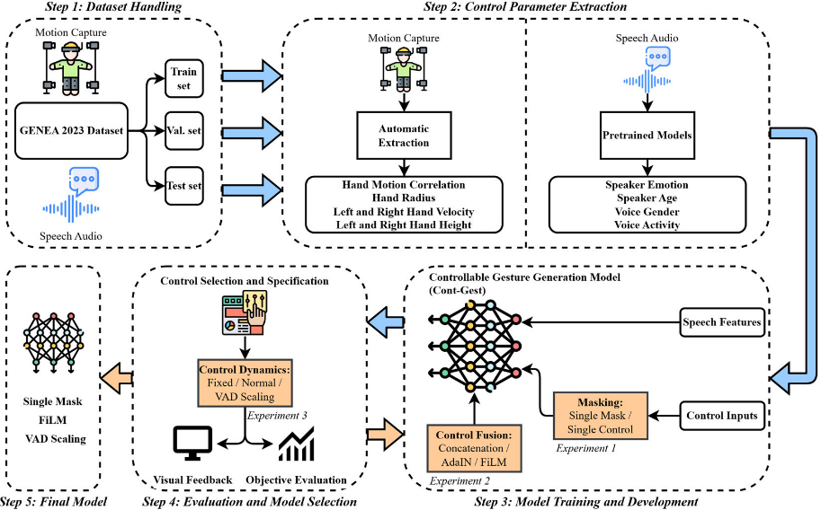
We address three key challenges for introducing selective control activation into the gesture generation model, and define them as main experiments within the proposed EDD workflow:
1. Managing redundancy and enabling selective control activation: gesture control parameters often overlap or conflict, for example, when both gesture speed and
emotion affect motion dynamics. To manage this, we introduce two masked training mechanisms: (i) single-mask training, where one random control is masked during each iteration, and (ii) single-control training, where only one control is active while others are masked.
2. Effective control andmask integration into the model: it is important that the model follows the control input and is not affected by mask values when the specific control is off. Therefore, we systematically evaluate three conditioning methods: concatenation, Feature-wise Linear Modulation (FiLM) [12], and Adaptive Instance Normalization (AdaIN) [13]. These methods are assessed based on their influence on the output gesture motion and the gesture quality, which is evaluated by the proposed objective metric.
3. Temporal dynamics of controls: If the control vector is represented with just one value across the entire audio segment, this does not represent the control values during training. To introduce more dynamic control vectors, we proposed two strategies: (i) random sampling within a specific range based on normal distribution, and (ii) scaling based on voice activity detection (VAD) to align control values with speech dynamics
As a central component of our evaluation-driven development (EDD) workflow, we introduce a graphical interface tool that enables both control specification and generated gesture evaluation. This interface allows for interactive exploration of the effects of different control parameters on generated gestures, providing visual (subjective) feedback alongside objective metrics. In comparison, prior work has relied heavily on subjective evaluations; such methods are time-consuming, resource-intensive, and challenging to scale [14]. Therefore, our EDD workflow emphasizes objective evaluation, while still supporting visual inspection for qualitative analysis. To this end, we propose and validate an objective evaluation metric based on the Kinetic Feature Extractor [15] combined with the Hellinger distance, which was first introduced in [16]. In this work, we extend this metric by investigating the influence of different motion feature representations on the metric's performance and attain a correlation of 0.7 with the Human-likeness subjective study from the GENEA 2023 challenge. This metric follows a similarity-based paradigm [17], in which features are extracted from both the reference and generated gestures, and the distance between these feature distributions is computed to assess gesture similarity.
In summary, our work makes the following contributions:
· Cont-Gest: A Transformer-based gesture generationmodel supporting both explicit (motion-level) and implicit (high-level style attributes) controls, such as emotion or speaker traits.
· Weakly-supervised controls: We extract control parameters from raw data using both automatic methods and pretrained models, reducing the need for manual annotation and enhancing scalability.
· Selective control training: Amasked control paradigm that enables control activation and deactivation.
· Temporal dynamics strategies: Techniques for maintaining natural gesture flow through dynamic control variation.
· Objective evaluationmetric: Anovel gesture qualitymetric based on the Kinetic Feature Extractor and Hellinger distance, that is highly correlated with subjective studies.
· Graphical interface tool: An interactive tool for real-time control, observation, manipulation, gesture visualization, and evaluation feedback.
The rest of this paper is structured as follows: Section 2 provides related work and background information relevant to the research field of controllable gesture generation. Section 3 details the proposed model and methods for introducing selective activation of the control parameters within the gesture generation model. Section 4 then outlines the experimental setup and the experiments conducted. Section 5 presents limitations and analyzes the results of the experiments. Finally, Section 6 summarizes the conclusions and discusses directions for future research.
2. RelatedWork
Controlling generated gesture motion can generally be categorized into two approaches, as outlined by Yoon et al. [18]. The first one is based on post-processing, where transformations are applied to already generated or captured motion to achieve desired effects. The second approach is then based on inputting controls directly into the generation model, allowing the model to condition its outputs based on these controls during the gesture synthesis process. In our work, we follow the second approach, focusing on how various control signals, such as motion statistics and high-level attributes, can be effectively incorporated into the model to influence the generated gestures in a controllable and selective manner.
2.1. Post-Processing Paradigm for Gesture Control
Early research in controllable gesture generation mostly followed the "post-processing paradigm", where motion is first generated and then modified to reflect specific control parameters. For example, the EMOTE (Expressive MOTion Engine) system [19] uses features from Laban Movement Analysis (LMA) to adjust gesture quality. Specifically, it utilizes Effort parameters (weight, time, space, and flow) and Shape components, which describe body form and spatial relationships (horizontal, vertical, sagittal, reach space) to control the output gesture motion. Building on EMOTE, Durupinar et al. [20] extended the system in order to incorporate personality controls by mapping the five-factor personality model onto gesture motion characteristics. Similarly, Hartmann et al. [21] proposed a method for modifying gestures to different expressive content with a set of six attributes (quantity of movement, spatial extent, duration, smoothness, power, and repetition). Although this work was initially described as integrated with gesture synthesis, it has been categorized by Yoon et al. [18] as a post-processing method because it modifies pre-generated gestures. More recently, Sonlu et al. [22] introduced an "animation modifier" that adjusts agent motion by modifying the base animation according to the agent's personality.
2.2. Input Control Paradigm
One of the earliest examples of the "input-control" paradigm has been used in ALMA (A Layered Model of Affect) [23], a layered affect that incorporates three control parameters: emotions, moods, and personality as input parameters. These affective states are computed in real time based on contextual input and are passed to both the dialog generation module and the character animation module. ALMA uses this information to explicitly influence multimodal behaviors such as gesture characteristics, posture, idle movement, and facial expressions. Building on this framework, Shvo et al. [24] proposed a more comprehensive model incorporating personality, emotion, mood, and motivation, extending the control capabilities beyond those originally found in ALMA.
Recent advances in deep learning have extended the input control paradigm into datadriven gesture generation systems, with approaches broadly categorized as using either implicit or explicit control signals. Implicit control involves abstract, high-level prompts such as descriptive text or example gestures, which are used to infer stylistic attributes without predefined numerical inputs. In contrast, explicit control leverages well-defined, interpretable motion descriptors as direct inputs to the generation model.
2.2.1. Explicit Gesture Control
Within the explicit control category, Alexanderson et al. [1] introduced a probabilistic model for speech-driven gesture generation using normalizing flows. Their system incorporated interpretable motion control parameters like gesture speed, hand height, spatial extent (gesticulation radius), and lateral symmetry (hand movement correlation). These controls were concatenated with acoustic features at the model input, enabling frame-level control. Crucially, in their work, they trained separate models for controlling each individual style attribute (MG-H for height, MG-V for speed, MG-R for radius, and MG-S for symmetry), rather than a single model that could control all styles simultaneously. Yoon et al. [18] extended this work through their SGToolkit, which integrates both stylelevel and pose-level explicit controls. Similar to Alexanderson et al. [1], they conditioned the model on motion statistics like speed, spatial extent, and handedness by concatenating them with speech feature vectors. However, the SGToolkit introduced an additional pose control, allowing users to specify exact joint configurations at selected frames using control pose vectors and binary masks. These pose and style inputs are incorporated simultaneously, offering both fine-grained gesture shaping and coarse stylistic modulation within a unified model.
2.2.2. Implicit Gesture Control
Another prominent direction in controllable gesture generation is modeling latent style conditions or using example-based style transfer to define gesture characteristics. For example, Qian et al. [25] proposed learning a set of gesture template vectors to model latent conditions that shape the overall appearance of generated gestures. These vectors are learned by using a Variational Autoencoder (VAE) framework. Namely, sampling different template vectors enables the generation of diverse gestures for the same speech input. Building on example-driven generation, Ghorbani et al. [3] introduced ZeroEGGS, a system enabling zero-shot gesture style control from short example motion clips. Their model uses a Style Encoder based on a VAE to extract a fixed-size style embedding from the example clip. This embedding is then concatenated with the speech embedding and used as input to the gesture generator. The VAE's probabilistic latent space allows style manipulation via interpolation and supports generalization to unseen styles without relying on handcrafted features. Expanding on this concept, Ao et al. [2] proposed GestureDiffuCLIP, which broadens style conditioning to support multimodal inputs, including example motion clips, video, or even descriptive text. The system uses a CLIP-based encoder to extract a style representation, which is then infused into a latent diffusion model using AdaIN [13]. In a different line of work, Habibie et al. [26], proposed a Motion Matching approach based on a k-Nearest Neighbor (k-NN) algorithm for fine-grained, per-frame gesture control. Their method synthesizes motion by retrieving matching gesture segments from a database based on audio and previous pose similarity. Control is introduced by constraining the search space using specific control parameters, such as motion statistics or timing cues. This flexible design enables users to mix and apply different types of control, even across time, without retraining the model. Finally, Alexanderson et al. [27] demonstrated style and intensity control using a diffusion-based gesture synthesis model with classifier-free guidance. Their approach allows modulation of style expression strength by adjusting the model's guidance parameter during the denoising process. The model is conditioned on binary-style labels such as happy, angry, old, and public speaking, derived from the ZeroEGGS dataset [3].
2.3. Control Parameter Extraction
A significant challenge in leveraging control parameters beyond speech is the scarcity of labeled data. Manual annotation is inherently limited, making obtaining sufficient training data for supervised learning difficult. This issue motivates the exploration of selfsupervised and weakly supervised learning paradigms, which derive control parameters automatically from motion or audio, reducing the need for explicit labeling. Control parameters can be derived from both audio and motion data.
Several methods extract interpretable control parameters directly from motion data, using statistical analysis of pose sequences. For example, Alexanderson et al. [1] and Yoon et al. [18] extracted explicit control parameters frommotion. Wu et al. [28] predicted personality traits from gesture features and used them as input to a conditional GAN (Generative Adversarial Network) for gesture generation.
Several approaches extract control parameters from audio. Kucherenko et al. [29] predicted gesture properties from speech and used them as conditions in a gesture generation model [30]. Ferstl et al. [31] estimated expressive gesture parameters and timings for gesture generation by a database search, retrieving and combining gesture segments that best matched the estimated properties. Zhang et al. [32] integrated automatic fuzzy feature inference, to extract diverse control features directly from raw speech. The paper by Bozkurt et al. [33] utilized continuous affect attributes (valence, activation, and dominance) as control parameters and prosody to generate gestures using Hidden Markov Models (HMMs). These attributes are either obtained from ground-truth annotations or estimated from speech prosody using Support Vector Regression (SVR) models.
2.4. Model Interface
The primary application of gesture control models is for animation creation by 3D media creators. For example, in [18] they presented the SGToolkit, which incorporates the control parameters proposed in [1] into a graphical user interface (GUI) that facilitates an easier animation workflow for animators. The results showed that, when provided with limited time, the animators produced higher quality animations with the SGToolkit than with manual animation. Our work takes a different approach, utilizing a model interface for evaluation-driven development rather than content creation.
2.5. Contrasting Our Work with Previous Work
Unlike prior work, which often focuses on a limited set of fixed control signals or post-processing paradigms, our approach directly integrates explicit motion-based and implicit audio-derived control parameters into the gesture generation process. These control signals are automatically extracted using weakly supervised methods and are selectively activated through a masked training strategy. We build upon the input-control paradigm by combining diverse control types within a Transformer-based framework, exploring multiple fusion techniques and the temporal dynamics of control application. Additionally, we introduce a graphical interface tool that facilitates evaluation-driven development with interactive controls, visual feedback, and objective evaluation to support large-scale rapid experimentation and development.
3. Methods and Materials
3.1. Data and Preprocessing
We used the available speech-gesture dataset provided by the GENEA 2023 challenge [34]. This dataset was derived from the "Talking with Hands" dataset [35] and comprises 18 h of full-body motion-capture data, corresponding speech audio, and timealigned transcripts of two-person, face-to-face spontaneous conversations.
In Figure 1, step 1, preprocessing was performed on both motion and audio data. The motion data were smoothed using a Savitzky-Golay filter with a window size of 21 and a polynomial order of 3. This was determined empirically, while some previous work used a window size of 9 with a polynomial order of 3 [36]. The audio data were also preprocessed, due to the presence of "click" noises resulting from DC offset and periods of zeroed audio information (introduced for speaker privacy), as discussed in [37]. The implemented audio preprocessing pipeline consists of three steps: (i) DC offset removal, (ii) normalization to a peak amplitude of -1 dB, and (iii) noise reduction. Noise reduction was performed with DeepFilterNet [38] implemented in the OpenVino AI plugins [39] for Audacity [40], which mitigated the crosstalk between speakers effectively.
3.2. Extraction of Control Parameters
A key aspect in the proposed approach is the automatic extraction of control parameters in Figure 1, step 2, eliminating the need for manual labeling. We utilized two categories of control parameters: (i) motion statistics-based controls, inspired by [1], and (ii) high-level controls derived from a weakly supervised paradigm using pretrained models.
More specifically, we extracted four motion statistics control parameters: (i) hand height (for both hands), derived from the y-coordinates of the wrists; (ii) hand speed (for both hands), calculated as the first derivative of the normalized 3D wrist movement; (iii) gesticulation radius, computed as the sum of the normalized wrist coordinates; and (iv) correlation between the left and right-hand movement, calculated as the difference between the left and right-hand velocities and normalized to the range [-1, 1]. The distribution of motion controls is presented in Figure 2.

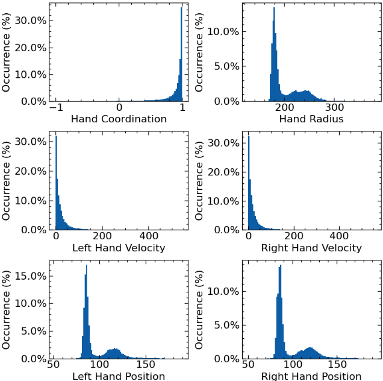
Additionally, we extracted four high-level control parameters from the audio with pre-trained models. It is important to note that we do not treat these outputs as ground truth but as weak control signals used to optionally control the Cont-Gest model. For voice activity detection, we utilized the pretrained model available in the SpeechBrain framework [41]. For speaker emotion, we utilized the Speech Emotion Diarization [42] pretrained model, which predicts the emotion for each frame in the speech, which is in contrast to previous speech emotion systems, which only predicted utterance-based emotion. This is useful in our work because it gives us more fine-grained control over parameters. For speaker gender and age, we used the unified model proposed in [43]. The model produces a normalized age value from 0 to 1, with one corresponding to an age of 100 years. For gender values, the model outputs the three probabilities for child, female, and male. The distribution of voice activity, predicted age, emotion, and gender classifications from speech is shown in Figure 3.

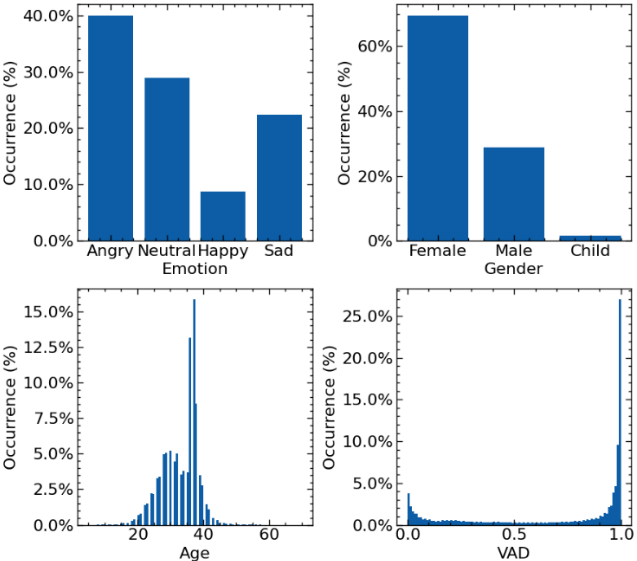
3.3. Controllable Gesture Model (Cont-Gest)
The proposed model is based on the Transformer architecture [10], specifically on the Whisper architecture, which was introduced for automatic speech recognition [11]. We incorporated the specifics of the Whisper architecture, where the encoder consists of two convolution layers with a filter width of 3, and the GLEU activation function. Additionally, we used pre-activation residual blocks and final layer normalization. A key difference between our Cont-Gest model and the Whisper model is the absence of positional embeddings, which we found to degrade performance. Therefore, the final ContGest model is trained with 4 heads, 3 layers, and a width of 256, resulting in 6.8 million trainable parameters. This model size can be considered extra small compared to the Whisper Tiny model, which has 39 million parameters with 4 layers and 6 heads. Figure 4 presents the Cont-Gest model architecture, showing the main Transformer structure and control integration approach.

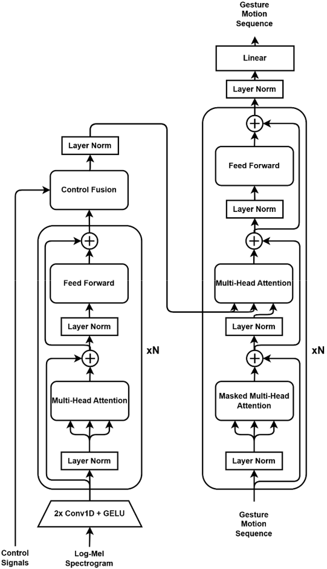
For the audio representations, we followed the Mel-spectrogram extraction used in Whisper [11]. The audio was resampled to 16 kHz, and then the 80-channel log-Melspectrograms were computed with a 400-frame window length and a stride of 160. The resulting 100 FPS log-Mel spectrograms were then resampled to 30 FPS to match the gesture motion frame rate. Gesture motion is represented with the 6D motion representation, as proposed in [44], which showed that this representation successfully tackles the discontinuities found in other motion representations.
3.3.1. Control Fusion Module
To introduce the control parameters into the model, we added the "Control Fusion" module at the end of the encoder part of the proposed model, as illustrated in Figure 4. We trained three different types of models based on various control fusion techniques:
1. Concatenation-based conditioning: the most straightforward approach, where auxiliary control parameters are appended directly to the intermediate model features.
2. Feature-wise Linear Modulation (FiLM) [12]: utilizes a conditional affine transformation to modulate the features of the intermediate model representation based on the control parameters. It scales (multiplies) and shifts (adds bias) using the information extracted from the control parameters. FiLM offers more control than concatenation as it allows for independent scaling and shifting of features. Mathematically, it is expressed as follows:

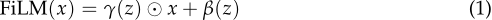
where x is the feature vector on which conditioning is being applied, z is the conditioning vector, γ and β are learned vectors for scaling and shifting the input feature vector.
3. Adaptive Instance Normalization (AdaIN) [13]: focuses on aligning the primary input features' statistical properties (mean and variance) with those of the control parameter. By doing this, AdaIN ensures that the distribution of the input features matches the "style" information encoded in the control parameter. AdaIN does not introduce additional learnable parameters. AdaIN can be represented mathematically as follows:

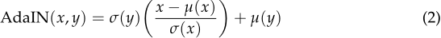
where σ is the variance, and µ is the average of the input feature vector x and control vector y.
3.3.2. Selective Control Activation
Furthermore, we propose a masking technique to enable selective control parameter activation in the Cont-Gest model. This technique masks control parameters randomly during training, which allows the model to learn to activate or deactivate selected control parameters. Because the control parameters have varying ranges, we used a consistent masking value of -2, which does not interfere with the range of any individual control. Specifically, instead of the actual control values, the model receives a vector of -2 s with the same length as the audio segment for which the gesture needs to be generated.
In the EDD workflow in Figure 1, we experimented with two training paradigms for selective control activation: "single-mask training" and "single-control training". In "single-mask training", we masked one control parameter randomly within each training batch. In contrast, in "single-control training", we masked all the control parameters, except for a single, randomly selected one. Before training, the control parameters, which span large ranges, were normalized using a logarithmic transformation: log(x + 2). This ensured that all the control parameters operated within a similar dynamic range, which improves training stability.
4. Experimental Setup
4.1. Model Training and Development
We implemented the Cont-Gest model in the Pytorch framework [45]. We trained Cont-Gest models on an Nvidia Tesla V100 GPU for 100 epochs, which lasted approximately 42 h, with a batch size of 512 and a learning rate of 0.0003. The loss function had two components, the primary reconstruction loss, and velocity loss implemented with the Huber loss. Let y ∈ R T×D represent the ground-truth gestures, and ˆy ∈ R T×D represent the predicted gestures, where T is the sequence length and D is the feature dimension. Velocity is computed as the difference between consecutive frames as follows:

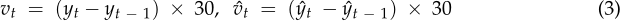
The final loss function is a weighted combination of these two terms, where we determined the weights for each loss based on the empirical results as follows:

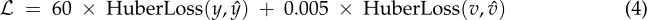
4.2. Experiments
4.2.1. Experiment 1-Masked Control Training
In the first experiment, we investigated how to effectively introduce control activation into the gesture generation model, enabling selective activation and deactivation of the control parameters. We introduced two training paradigms: "single-mask training" and "single-control training". In the "single-mask training" paradigm, we randomly masked a single control parameter within each training batch, using a value of -2. This allows the model to learn to generate gestures, even when some control parameters are absent. Conversely, the "single-control training" paradigmmasks all the control parameters except one. We then evaluated how each training paradigm influenced the model's ability to leverage control parameters to shape the output motion.
4.2.2. Experiment 2-Control Fusion
In the second experiment, we analyzed different control fusion techniques for integrating the control parameters into the Cont-Gest model. Specifically, we evaluated the performance of AdaIN and FiLM, contrasting them with a baseline approach, concatenation. We then analyzed the impact of each fusion method on the model's ability to utilize the control parameters to generate diverse and controlled gestures, subjectively and objectively.
4.2.3. Experiment 3-Control Dynamics
The third experiment addressed the challenge of static control parameters in gesture generation. A straightforward approach uses a fixed vector of control values matching the length of the audio input, but this contrasts with the frame-by-frame variation observed in control parameters during training. We hypothesized that incorporating more dynamic control parameters can improve performance. Therefore, we investigated two alternative approaches: normal distribution sampling and voice activity detection (VAD) scaling, comparing them to the baseline of fixed control values. These methods aim to introduce more realistic variations into the control parameters. Due to the large number of available control parameters, we focused this analysis on the best performing control activation paradigm, and control fusion techniques.
4.3. Evaluation and Model Selection
While providing valuable insights, the subjective evaluation of gesture generation quality is expensive and time-consuming to conduct at scale during model development. Therefore, we employ an objective evaluation metric that correlates with subjective assessments to enable efficient model comparison and selection. However, we maintain visual inspection capabilities to validate and cross-check the objective metric results.
4.3.1. Objective Evaluation
To analyze the impact of the varying control parameter magnitudes, we evaluated the models using control values corresponding to the 15th, 50th, and 85th percentiles of each control parameter distribution, following the method in [1]. The percentile values are presented in Table 1, which were computed from the distributions presented in Figure 2. We then measured the average influence of these control values on the generated motion across the test set. We also added the standard deviation of the mean (SEM) to provide error bounds for the average influence values.

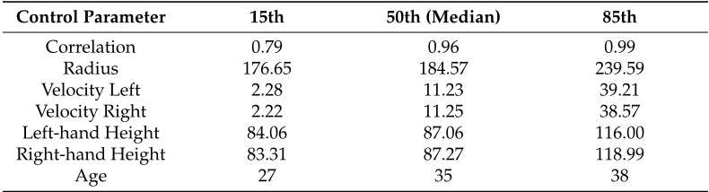
Recognized table text (check against the image)
| Control Parameter | 15th | 50th (Median) | 85th |
|---|---|---|---|
| Correlation | 0.79 | 0.96 | 0.99 |
| Radius | 176.65 | 184.57 | 239.59 |
| Velocity Left | 2.28 | 11.23 | 39.21 |
| Velocity Right | 2.22 | 11.25 | 38.57 |
| Left-hand Height | 84.06 | 87.06 | 116.00 |
| Right-hand Height | 83.31 | 87.27 | 118.99 |
| Age | 27 | 35 | 38 |
The proposed Kinetic-Hellinger (Kin-Hel) distance also assessed overall motion quality under these conditions. First, we validated this evaluation metric against subjective data from the GENEA 2023 challenge [34]. For each condition evaluated in the challenge, we extracted the upper body features using the Kinetic [15] feature extractor and calculated the Hellinger distance between the generated and original motions. We used the mean pose from the training data as the starting pose for all the generated sequences to mitigate the influence of random initial poses on the evaluation results. While this may slightly reduce the diversity of generated gestures, it significantly improved the reliability and consistency of our evaluations. Our primary baseline for control parameter fusion was concatenation. Whereas concatenation has been used previously [1,18], we applied it differently. Instead of concatenating the control parameters with the input, we concatenated them with the output of the encoder component of the proposed Cont-Gest model.
Finally, we acknowledged that, due to speech being the primary driver of gesture generation, we did not expect a perfect one-to-one mapping between the input and output control values. Instead, we expected to observe trends where increasing input control values led to corresponding changes in the generated motion.
4.3.2. Validation of the Kinetic-Hellinger Metric
For objective evaluation, we proposed an objective metric, the Kinetic-Hellinger distance, which combines a Kinetic Feature Extractor [15] with the Hellinger distance. To validate this metric, we utilized data from the GENEA 2023 challenge [34], consisting of motion capture data submitted by participating teams and corresponding human ratings for human-likeness and speech-gesture appropriateness. We evaluated three input representations for the Kinetic Feature Extractor: 3D positions, axis-angle representations (also known as exponential maps, [46]), and 6D representations [44]. Our analysis focused exclusively on upper-body motion.
The validation process involved extracting features from each submitted condition, ranking them based on the Kinetic-Hellinger distance (lower values indicating better quality), and computing the Kendall-Tau correlation between this ranking and the subjective evaluation rankings provided by the GENEA 2023 challenge. We then computed the correlation with the human-likeness study from GENEA 2023, where the participants evaluated the human-likeness of the generated gestures. Table 2 presents the results, demonstrating that the Kinetic-Hellinger distance with 6D features achieved the highest correlation with credible human ratings. Consequently, in subsequent experiments, we adopted this specific combination (Kinetic-Hellinger with 6D features) to evaluate our controllable gesture generation model.

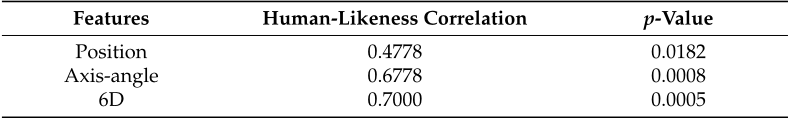
Recognized table text (check against the image)
| Features | Human-Likeness Correlation | p-Value |
|---|---|---|
| Position | 0.4778 | 0.0182 |
| Axis-angle | 0.6778 | 0.0008 |
| 6D | 0.7000 | 0.0005 |
4.3.3. Graphical Interface for Visual Feedback and Control Specification
To facilitate evaluation-driven model development, we developed a graphical interface tool for visual feedback, presented in Figure 5. This tool features several sliders, dropdown menus, and a preview of the generated gesture motion, enabling easy manipulation and observation of the control parameters' effects. The graphical interface is organized into three sections using the Streamlit library and ThreeJS for BVH motion file visualization. The first section allows us to specify the model's name, selected checkpoint, number of evaluation files, and experiment title. The second section then provides us with all controls to activate or deactivate specific control parameters. Finally, the third section animates the generated gestures, enabling visualization of each generated motion. It is important to note that this graphical interface only represents our experimental setup and is not intended to be used by the end users. Accordingly, we do not report quantitative analyses of user interactions or feedback.

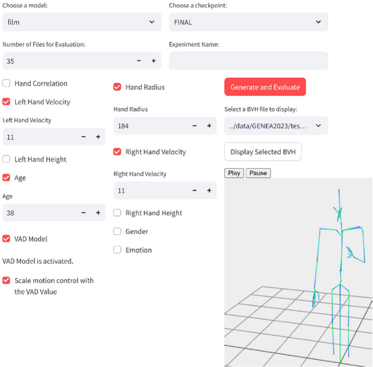
5. Results
5.1. Experiment 1-Effect of Control Training Paradigm
In Figure 6, the results for the first experiment show that, despite identical training data, models learned to handle control parameters differently based on their training paradigm. Models trained with the single-control paradigm achieved superior objective evaluation scores (lower Kin-Hel-6D values), likely because frequent exposure to scenarios with most controls masked during training led to more robust motion generation. This improvedmotion quality, however, came at the cost of reduced control responsiveness.

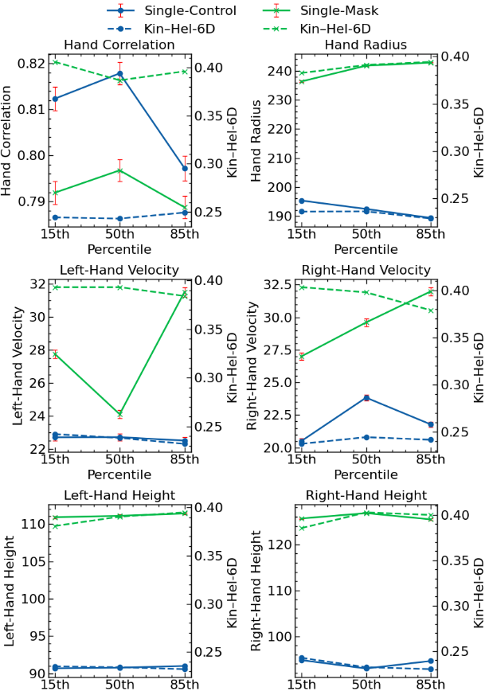
Neither training paradigm enabled precise control following, but they exhibited distinct behaviors. The single-mask paradigm demonstrated the best control-tracking performance, with output values closely following the increasing percentile levels of the input controls. This suggests that selectively masking individual controls during training preserves the model's ability to respond to control variations while maintaining motion quality. In contrast, the single-control paradigm prioritizes motion naturalness over control precision.
5.2. Experiment 2-Effect of Control Fusion
Building on Experiment 1's evaluation of training paradigms using concatenation as the baseline fusion method, this experiment compares different control fusion techniques: AdaIN [13] and FiLM [12]. All models were trained using the single-mask paradigm since it showed better control responsiveness. Figure 7 shows the influence of different fusion techniques on control parameter responsiveness. While none of the models achieved precise control adherence, concatenation and AdaIN demonstrated superior performance in tracking control trends compared to FiLM. This was most evident for right-hand velocity and hand radius controls, where output motion increased consistently with higher input values. Regarding the trade-off between control responsiveness and motion quality, AdaIN achieved control performance comparable to concatenation while producing higher overall motion quality. In contrast, FiLM showed minimal responsiveness to control inputs but generated the highest motion quality according to the 6D Kinetic-Hellinger distance metric. This suggests a fundamental trade-off between control precision and motion naturalness across different fusion approaches.

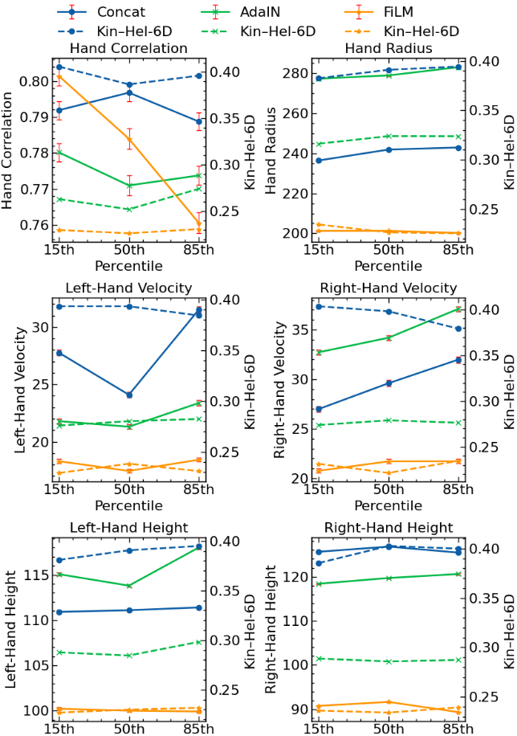
5.3. Experiment 3-Effect of Control Dynamics
Since FiLM conditioning achieved the best evaluation score in Experiment 3, we further analyzed how to improve controllability with control dynamics. Figure 8 demonstrates how different control dynamic approaches affect the performance of FiLM conditioning. The fixed control approach proved ineffective, with the model failing to follow intended control parameters and exhibiting negative trends for nearly all parameters except right-hand velocity. Normal distribution sampling provided no substantial improvement over the fixed approach, suggesting that random variation alone is insufficient to enhance control responsiveness. In contrast, VAD scaling yielded significantly better results, producing positive control-following trends for hand correlation, hand radius, left-hand velocity, and right-hand velocity. For the remaining parameters, VAD scaling initially showed positive trends at the 15th and 50th percentiles before reversing to negative trends at the 85th percentile.

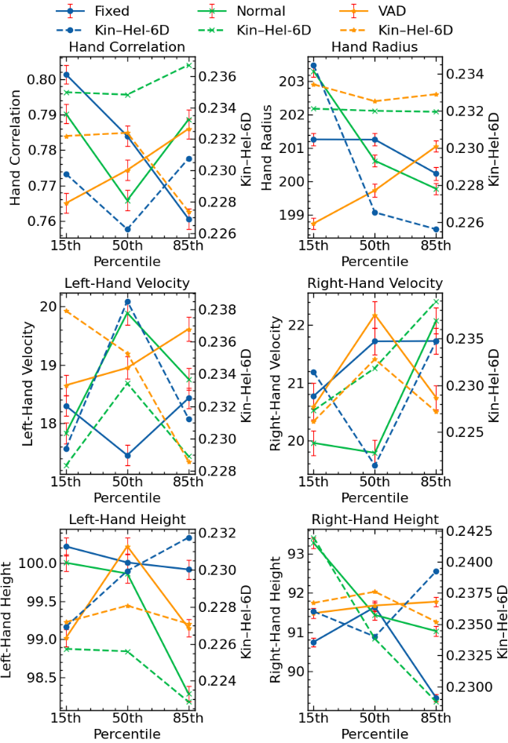
5.4. Extended Control Analysis
This section presents two supplementary evaluations of the Cont-Gest models. First, we analyze model performance when no control parameters are applied (deactivation scenario). Second, we evaluate the integration of high-level control parameters (age, emotion, and gender) using our best-performing model configuration: FiLM conditioning with single-mask training. Tables report mean values for the kinematic parameters with standard error of the mean (±SEM).
5.4.1. No Control Analysis
The results, in Table 3, demonstrate that FiLM conditioning consistently produces the highest motion quality when handling deactivated control parameters. This is most pronounced with the single-control training paradigm, which aligns with our expectations, given that this paradigm frequently exposes the model to scenarios with most controls masked. Notably, FiLM conditioning outperforms AdaIN conditioning and the concatenation baseline under the single-mask training paradigm, confirming its robustness across different training strategies.

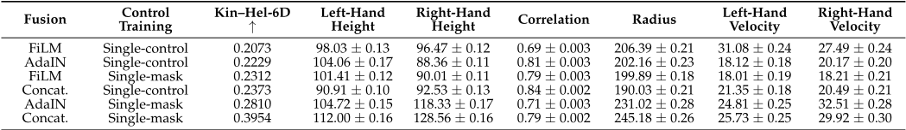
Recognized table text (check against the image)
| Fusion | Control Training | Kin-Hel-6D ↑ | Left-Hand Height | Right-Hand Height | Correlation | Radius | Left-Hand Velocity | Right-Hand Velocity |
|---|---|---|---|---|---|---|---|---|
| FiLM | Single-control | 0.2073 | 98.03 ± 0.13 | 96.47 ± 0.12 | 0.69 ± 0.003 | 206.39 ± 0.21 | 31.08 ± 0.24 | 27.49 ± 0.24 |
| AdaIN | Single-control | 0.2229 | 104.06 ± 0.17 | 88.36 ± 0.11 | 0.81 ± 0.003 | 202.16 ± 0.23 | 18.12 ± 0.18 | 20.17 ± 0.20 |
| FiLM | Single-mask | 0.2312 | 101.41 ± 0.12 | 90.01 ± 0.11 | 0.79 ± 0.003 | 199.89 ± 0.18 | 18.01 ± 0.19 | 18.21 ± 0.21 |
| Concat. | Single-control | 0.2373 | 90.91 ± 0.10 | 92.53 ± 0.13 | 0.84 ± 0.002 | 190.03 ± 0.21 | 21.35 ± 0.18 | 20.49 ± 0.21 |
| AdaIN | Single-mask | 0.2810 | 104.72 ± 0.15 | 118.33 ± 0.17 | 0.71 ± 0.003 | 231.02 ± 0.28 | 24.81 ± 0.25 | 32.51 ± 0.28 |
| Concat. | Single-mask | 0.3954 | 112.00 ± 0.16 | 128.56 ± 0.16 | 0.79 ± 0.002 | 245.18 ± 0.26 | 25.73 ± 0.25 | 29.92 ± 0.30 |
↑ denotes models ordered by increasing quality, where a smaller Kin-Hel value indicates better quality.
5.4.2. High-Level Control Analysis
Table 4 presents the evaluation results for "high-level" controls (age, emotion, and gender) applied to the FiLM conditioning model trained with the single-mask training paradigm. These semantic controls pose a greater learning challenge compared to kinematic controls, likely due to their inherent ambiguity and the subjective nature of their ground-truth annotations. Despite these challenges, the results demonstrate that high-level controls provide meaningful model steering capabilities, generating distinct and varied gesture patterns.

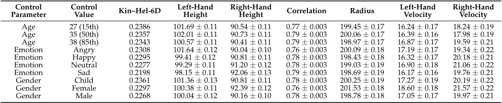
Recognized table text (check against the image)
| Control Parameter | Control Value | Kin-Hel-6D | Left-Hand Height | Right-Hand Height | Correlation | Radius | Left-Hand Velocity | Right-Hand Velocity |
|---|---|---|---|---|---|---|---|---|
| Age | 27 (15th) | 0.2386 | 101.69 ± 0.11 | 90.54 ± 0.11 | 0.77 ± 0.003 | 199.45 ± 0.17 | 16.24 ± 0.17 | 18.24 ± 0.19 |
| Age | 35 (50th) | 0.2357 | 102.01 ± 0.11 | 90.73 ± 0.11 | 0.79 ± 0.003 | 200.06 ± 0.17 | 16.39 ± 0.16 | 17.98 ± 0.19 |
| Age | 38 (85th) | 0.2343 | 100.57 ± 0.11 | 90.41 ± 0.11 | 0.79 ± 0.003 | 198.97 ± 0.17 | 16.87 ± 0.17 | 19.59 ± 0.21 |
| Emotion | Angry | 0.2308 | 101.64 ± 0.12 | 90.04 ± 0.10 | 0.76 ± 0.003 | 200.09 ± 0.18 | 17.19 ± 0.17 | 19.34 ± 0.22 |
| Emotion | Happy | 0.2295 | 99.41 ± 0.12 | 90.81 ± 0.11 | 0.78 ± 0.003 | 198.43 ± 0.18 | 16.32 ± 0.17 | 20.18 ± 0.21 |
| Emotion | Neutral | 0.2277 | 99.29 ± 0.11 | 91.20 ± 0.12 | 0.78 ± 0.003 | 199.03 ± 0.19 | 16.90 ± 0.18 | 21.06 ± 0.22 |
| Emotion | Sad | 0.2198 | 98.15 ± 0.11 | 92.06 ± 0.13 | 0.79 ± 0.003 | 198.69 ± 0.19 | 16.17 ± 0.16 | 19.76 ± 0.21 |
| Gender | Child | 0.2361 | 101.36 ± 0.13 | 90.81 ± 0.11 | 0.78 ± 0.003 | 200.25 ± 0.19 | 17.27 ± 0.19 | 20.19 ± 0.22 |
| Gender | Female | 0.2297 | 100.38 ± 0.11 | 92.39 ± 0.12 | 0.76 ± 0.003 | 201.53 ± 0.18 | 18.60 ± 0.18 | 21.57 ± 0.22 |
| Gender | Male | 0.2268 | 100.04 ± 0.12 | 90.16 ± 0.10 | 0.78 ± 0.003 | 198.78 ± 0.18 | 17.05 ± 0.17 | 19.97 ± 0.21 |
6. Conclusions
In this paper, we proposed a controllable gesture generation model, Cont-Gest, based on a Transformer encoder-decoder architecture that enables selective control activation through masked training. We introduced a range of weakly supervised control signals, derived from both motion (e.g., hand velocity, height, radius, correlation) and audio
(e.g., emotion, age, voice activity), and evaluated multiple control fusion techniques, including concatenation, AdaIN, and FiLM. To support the systematic development of the model, we proposed an evaluation-driven development (EDD) workflow that integrates objective evaluation using the Kinetic-Hellinger distance and subjective evaluation (visual inspection), within a graphical interface tool for real-time analysis. The experiments show that FiLM-based conditioning, combined with single-control masking and voice activity scaling, yields the best trade-off between control adherence and motion quality.
Despite these promising results, our study still has several limitations. Firstly, the scope of control parameters, while broader than in prior work, remains constrained by the availability and accuracy of pre-trained models in tools used for automatic feature extraction. Although the Kinetic-Hellinger distance is a reliable approximation of human judgment, it cannot fully replace large-scale user studies for evaluating gesture naturalness and appropriateness. Additionally, currently, only the GENEA 2023 subjective study is large-scale and credible to validate the correlation with subjective studies. However, as demonstrated in this paper, it can accelerate the development process. Finally, the proposed framework focuses on monologue-type interactions and does not yet support dyadic or real-time interactive settings.
In future work, we will explore the integration of richer conversational context, such as turn-taking, social role dynamics, or multimodal cues from the interlocutor. We also intend to expand the control set to include dialogue intent or discourse structure that could further enhance gesture relevance. Additionally, we will integrate the Cont-Gest model into real-time deployment scenarios, including adaptive control interfaces and incremental generation, that would broaden its applicability in embodied agents and human-robot interaction.
Author Contributions: Conceptualization, K.C.; methodology, K.C.; software, K.C.; validation, K.C., formal analysis, K.C.; writing-original draft preparation, K.C.; writing-review and editing, K.C. and M.R.; visualization, K.C.; supervision, M.R.; funding acquisition, M.R. All authors have read and agreed to the published version of the manuscript.
Funding: This research was funded by Slovenian Research Agency, grant number P2-0069.
Institutional Review Board Statement: Not applicable.
Informed Consent Statement: Not applicable.
Data Availability Statement: The data used in this paper is publicly available at: https://zenodo. org/records/8199133 (accessed on 25 August 2025); The published models can be found at: https: //github.com/kacr2/cont-gest (accessed on 25 August 2025).
Conflicts of Interest: The authors declare no conflicts of interest. The funders had no role in the design of the study; in the collection, analyses, or interpretation of data; in the writing of the manuscript; or in the decision to publish the results.
Abbreviations
The following abbreviations are used in this manuscript:
ECA Embodied Conversational Agent
EDD Evaluation-driven Development
FiLM Feature-wise Linear Modulation
AdaIN Adaptive Instance Normalization
VAD Voice Activity Detection
References
1. Alexanderson, S.; Henter, G.E.; Kucherenko, T.; Beskow, J. Style-Controllable Speech-DrivenGesture Synthesis UsingNormalising Flows. Comput. Graph. Forum 2020, 39, 487-496. [CrossRef]
2. Ao, T.; Zhang, Z.; Liu, L. GestureDiffuCLIP: Gesture Diffusion Model with CLIP Latents. ACM Trans. Graph. 2023, 42, 42. [CrossRef]
3. Ghorbani, S.; Ferstl, Y.; Holden, D.; Troje, N.F.; Carbonneau, M.-A. ZeroEGGS: Zero-Shot Example-Based Gesture Generation from Speech. Comput. Graph. Forum 2023, 42, 206-216. [CrossRef]
4. Nyatsanga, S.; Kucherenko, T.; Ahuja, C.; Henter, G.E.; Neff, M. AComprehensive Review of Data-Driven Co-Speech Gesture Generation. Comput. Graph. Forum 2023, 42, 569-596. [CrossRef]
5. Ribet, S.; Wannous, H.; Vandeborre, J.-P. Survey on Style in 3D Human Body Motion: Taxonomy, Data, Recognition and Its Applications. IEEE Trans. Affect. Comput. 2021, 12, 928-948. [CrossRef]
6. Castillo, G.; Neff, M. What Do We Express Without Knowing? Emotion in Gesture. In Proceedings of the 18th International Conference on Autonomous Agents and MultiAgent Systems, Montreal, QC, Canada, 13-17 May 2019; pp. 702-710.
7. Smith, H.J.; Neff, M. Understanding the Impact of Animated Gesture Performance on Personality Perceptions. ACMTrans. Graph. 2017, 36, 49. [CrossRef]
8. Feine, J.; Gnewuch, U.; Morana, S.; Maedche, A. A Taxonomy of Social Cues for Conversational Agents. Int. J. Hum.-Comput. Stud. 2019, 132, 138-161. [CrossRef]
9. Yoon, Y.; Cha, B.; Lee, J.-H.; Jang, M.; Lee, J.; Kim, J.; Lee, G. Speech Gesture Generation from the Trimodal Context of Text, Audio, and Speaker Identity. ACMTrans. Graph. 2020, 39, 222. [CrossRef]
10. Vaswani, A.; Shazeer, N.; Parmar, N.; Uszkoreit, J.; Jones, L.; Gomez, A.N.; Kaiser, Ł.; Polosukhin, I. Attention Is All You Need. In Proceedings of the 31st International Conference on Neural Information Processing Systems, Long Beach, CA, USA, 4-9 December 2017; pp. 6000-6010.
11. Radford, A.; Kim, J.W.; Xu, T.; Brockman, G.; McLeavey, C.; Sutskever, I. Robust Speech Recognition via Large-Scale Weak Supervision. In Proceedings of the 40th International Conference on Machine Learning, Honolulu, HI, USA, 23-29 July 2023; Volume 202, pp. 28492-28518.
12. Perez, E.; Strub, F.; de Vries, H.; Dumoulin, V.; Courville, A. FiLM: Visual Reasoning with a General Conditioning Layer. In Proceedings of the Thirty-Second AAAI Conference on Artificial Intelligence and Thirtieth Innovative Applications of Artificial Intelligence Conference and Eighth AAAI Symposium on Educational Advances in Artificial Intelligence, New Orleans, LA, USA, 2-7 February 2018; pp. 3942-3951.
13. Huang, X.; Belongie, S. Arbitrary Style Transfer in Real-Time with Adaptive Instance Normalization. In Proceedings of the 2017 IEEE International Conference on Computer Vision (ICCV), Venice, Italy, 22-29 October 2017; pp. 1510-1519.
14. Wolfert, P.; Henter, G.E.; Belpaeme, T. Exploring the Effectiveness of Evaluation Practices for Computer-GeneratedNonverbal Behaviour. Appl. Sci. 2024, 14, 1460. [CrossRef]
15. Onuma, K.; Faloutsos, C.; Hodgins, J.K. FMDistance: A Fast and Effective Distance Function for Motion Capture Data. In Proceedings of the Eurographics 2008-Short Papers; Mania, K., Reinhard, E., Eds.; The Eurographics Association: Eindhoven, The Netherlands, 2008.
16. Crnek, K.; Moˇcnik, G.; Rojc, M. Advancing Objective Evaluation of Speech-Driven Gesture Generation for Embodied Conversational Agents. Int. J. Hum.-Comput. Interact. 2025, 1-17. [CrossRef]
17. Park, J.; Cho, S.; Kim, D.; Bailo, O.; Park, H.; Hong, S.; Park, J. A Body Part EmbeddingModel with Datasets for Measuring 2D HumanMotion Similarity. IEEE Access 2021, 9, 36547-36558. [CrossRef]
18. Yoon, Y.; Park, K.; Jang, M.; Kim, J.; Lee, G. SGToolkit: An Interactive Gesture Authoring Toolkit for Embodied Conversational Agents. In Proceedings of the 34th Annual ACM Symposium on User Interface Software and Technology, New York, NY, USA, 10-14 October 2021; pp. 826-840.
19. Chi, D.; Costa, M.; Zhao, L.; Badler, N. The EMOTEModel for Effort and Shape. In Proceedings of the 27th Annual Conference on Computer Graphics and Interactive Techniques, New Orleans, LA, USA, 23-28 July 2000; pp. 173-182.
20. Durupinar, F.; Kapadia, M.; Deutsch, S.; Neff, M.; Badler, N.I. PERFORM: Perceptual Approach for Adding OCEAN Personality to Human Motion Using Laban Movement Analysis. ACM Trans. Graph. 2016, 36, 6. [CrossRef]
21. Hartmann, B.; Mancini, M.; Pelachaud, C. Implementing Expressive Gesture Synthesis for Embodied Conversational Agents. In The Gesture in Human-Computer Interaction and Simulation, Proceedings of the 6th International Gesture Workshop, GW 2005, Berder Island, France, 18-20 May 2005; Gibet, S., Courty, N., Kamp, J.-F., Eds.; Springer: Berlin/Heidelberg, Germany, 2006; pp. 188-199.
22. Sonlu, S.; Güdükbay, U.; Durupinar, F. AConversational Agent Framework withMulti-Modal Personality Expression. ACM Trans. Graph. 2021, 40, 7. [CrossRef]
23. Gebhard, P. ALMA: A LayeredModel of Affect. In Proceedings of the Fourth International Joint Conference on Autonomous Agents and Multiagent Systems, Utrecht, The Netherlands, 25-29 July 2005; pp. 29-36.
24. Shvo, M.; Buhmann, J.; Kapadia, M. An Interdependent Model of Personality, Motivation, Emotion, andMood for Intelligent Virtual Agents. In Proceedings of the 19th ACM International Conference on Intelligent Virtual Agents, Paris, France, 2-5 July 2019; pp. 65-72.
25. Qian, S.; Tu, Z.; Zhi, Y.; Liu, W.; Gao, S. Speech Drives Templates: Co-Speech Gesture Synthesis with Learned Templates. In Proceedings of the 2021 IEEE/CVF International Conference on Computer Vision (ICCV), Montreal, QC, Canada, 10-17 October 2021; pp. 11057-11066.
26. Habibie, I.; Elgharib, M.; Sarkar, K.; Abdullah, A.; Nyatsanga, S.; Neff, M.; Theobalt, C. AMotionMatching-Based Framework for Controllable Gesture Synthesis from Speech. In Proceedings of the Special Interest Group on Computer Graphics and Interactive Techniques Conference, Vancouver, BC, Canada, 7-11 August 2022; pp. 1-9.
27. Alexanderson, S.; Nagy, R.; Beskow, J.; Henter, G.E. Listen, Denoise, Action! Audio-Driven Motion Synthesis with Diffusion Models. ACMTrans. Graph. 2023, 42, 44. [CrossRef]
28. Wu, B.; Liu, C.; Ishi, C.T.; Shi, J.; Ishiguro, H. Extrovert or Introvert? GAN-BasedHumanoid Upper-Body Gesture Generation for Different Impressions. Int. J. Soc. Robot. 2023, 17, 457-472. [CrossRef]
29. Kucherenko, T.; Nagy, R.; Neff, M.; Kjellström, H.; Henter, G.E. Multimodal Analysis of the Predictability of Hand-Gesture Properties. In Proceedings of the 21st International Conference on Autonomous Agents and Multiagent Systems, Virtual, 9-13 May 2022; pp. 770-779.
30. Kucherenko, T.; Nagy, R.; Jonell, P.; Neff, M.; Kjellström, H.; Henter, G.E. Speech2Properties2Gestures: Gesture-Property Prediction as a Tool for Generating Representational Gestures from Speech. In Proceedings of the 21st ACM International Conference on Intelligent Virtual Agents, Virtual, 14-17 September 2021; pp. 145-147.
31. Ferstl, Y.; Neff, M.; McDonnell, R. ExpressGesture: Expressive Gesture Generation from Speech Through Database Matching. Comput. Animat. Virtual Worlds 2021, 32, e2016. [CrossRef]
32. Zhang, F.; Wang, Z.; Lyu, X.; Zhao, S.; Li, M.; Geng, W.; Ji, N.; Du, H.; Gao, F.; Wu, H.; et al. Speech-Driven Personalized Gesture Synthetics: Harnessing Automatic Fuzzy Feature Inference. IEEE Trans. Vis. Comput. Graph. 2024, 30, 6984-6996. [CrossRef] [PubMed]
33. Bozkurt, E.; Yemez, Y.; Erzin, E. Affective Synthesis and Animation of ArmGestures from Speech Prosody. Speech Commun. 2020, 119, 1-11. [CrossRef]
34. Kucherenko, T.; Nagy, R.; Yoon, Y.; Woo, J.; Nikolov, T.; Tsakov, M.; Henter, G.E. The GENEA Challenge 2023: A Large-Scale Evaluation of Gesture Generation Models in Monadic and Dyadic Settings. In Proceedings of the 25th International Conference on Multimodal Interaction, Paris, France, 9-13 October 2023; pp. 792-801.
35. Lee, G.; Deng, Z.; Ma, S.; Shiratori, T.; Srinivasa, S.; Sheikh, Y. Talking with Hands 16.2M: A Large-Scale Dataset of Synchronized Body-Finger Motion and Audio for Conversational Motion Analysis and Synthesis. In Proceedings of the 2019 IEEE/CVF International Conference on Computer Vision (ICCV), Seoul, Republic of Korea, 27 October-2 November 2019; pp. 763-772.
36. Kucherenko, T.; Jonell, P.; Yoon, Y.; Wolfert, P.; Henter, G.E. A Large, Crowdsourced Evaluation of Gesture Generation Systems on Common Data: The GENEA Challenge 2020. In Proceedings of the 26th International Conference on Intelligent User Interfaces, College Station, TX, USA, 14-17 April 2021; pp. 11-21.
37. Deichler, A.; Mehta, S.; Alexanderson, S.; Beskow, J. Diffusion-Based Co-Speech Gesture Generation Using Joint Text and Audio Representation. In Proceedings of the 25th International Conference on Multimodal Interaction, Paris, France, 9-13 October 2023; pp. 755-762.
38. Schroter, H.; Escalante-B, A.N.; Rosenkranz, T.; Maier, A. Deepfilternet: A LowComplexity Speech Enhancement Framework for Full-Band Audio Based On Deep Filtering. In Proceedings of the ICASSP 2022-2022 IEEE International Conference on Acoustics, Speech and Signal Processing (ICASSP), Singapore, 22-27 May 2022; pp. 7407-7411.
39. Intel/Openvino-Plugins-Ai-Audacity: A Set of AI-Enabled Effects, Generators, and Analyzers for Audacity®. Available online: https://github.com/intel/openvino-plugins-ai-audacity (accessed on 13 March 2025).
40. Audacity ®|Free Audio Editor, Recorder, Music Making andMore! Available online: https://www.audacityteam.org/ (accessed on 13 March 2025).
41. Ravanelli, M.; Parcollet, T.; Plantinga, P.; Rouhe, A.; Cornell, S.; Lugosch, L.; Subakan, C.; Dawalatabad, N.; Heba, A.; Zhong, J.; et al. SpeechBrain: AGeneral-Purpose Speech Toolkit. arXiv 2021, arXiv:2106.04624.
42. Wang, Y.; Ravanelli, M.; Yacoubi, A. Speech Emotion Diarization: Which Emotion AppearsWhen? In Proceedings of the 2023 IEEE Automatic Speech Recognition and Understanding Workshop (ASRU), Taipei, Taiwan, 16-20 December 2023; pp. 1-7.
43. Burkhardt, F.; Wagner, J.; Wierstorf, H.; Eyben, F.; Schuller, B. Speech-Based Age and Gender Predictionwith Transformers. In Proceedings of the 15th ITG Conference on Speech Communication, Aachen, Germany, 20-22 September 2023; pp. 46-50.
44. Zhou, Y.; Barnes, C.; Lu, J.; Yang, J.; Li, H. On the Continuity of Rotation Representations in Neural Networks. In Proceedings of the 2019 IEEE/CVF Conference on Computer Vision and Pattern Recognition (CVPR), Long Beach, CA, USA, 15-20 June 2019; pp. 5738-5746.
45. Paszke, A.; Gross, S.; Massa, F.; Lerer, A.; Bradbury, J.; Chanan, G.; Killeen, T.; Lin, Z.; Gimelshein, N.; Antiga, L.; et al. PyTorch: An Imperative Style, High-Performance Deep Learning Library. In Proceedings of the 33rd International Conference on Neural Information Processing Systems, Vancouver, BC, Canada, 8-14 December 2019; pp. 8026-8037.
46. Grassia, F.S. Practical Parameterization of Rotations Using the Exponential Map. J. Graph. Tools 1998, 3, 29-48. [CrossRef]
Disclaimer/Publisher's Note: The statements, opinions and data contained in all publications are solely those of the individual author(s) and contributor(s) and not of MDPI and/or the editor(s). MDPI and/or the editor(s) disclaim responsibility for any injury to people or property resulting from any ideas, methods, instructions or products referred to in the content.